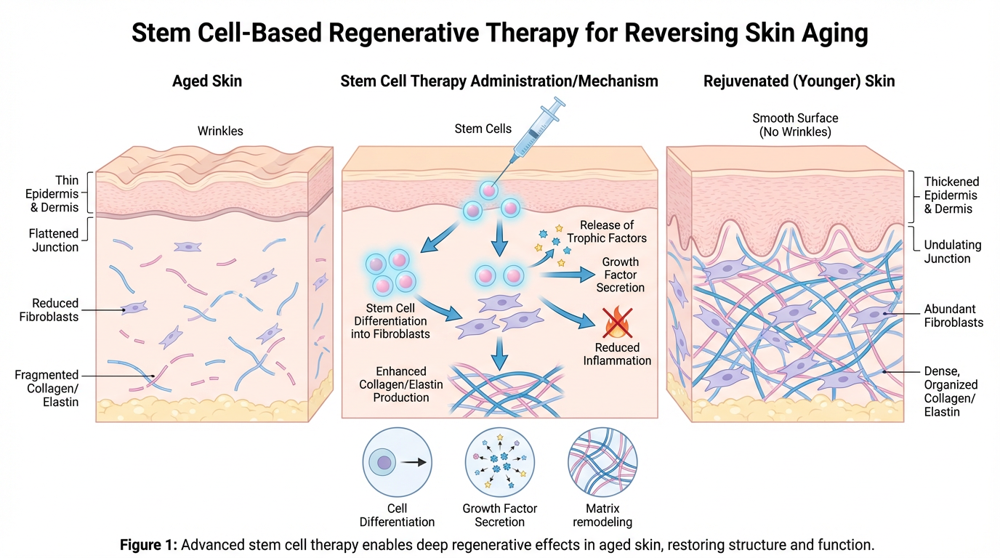
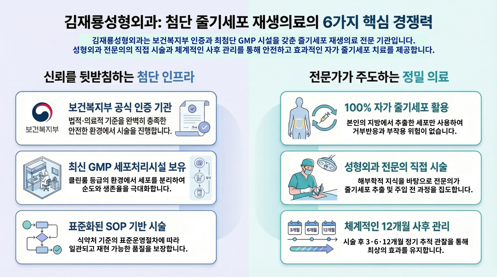

김재룡성형외과의 첨단 줄기세포 기술로
피부 깊은 곳부터 근본적인 재생과 회복을 경험하세요

줄기세포(Stem Cell)는 다양한 세포로 분화할 수 있는 능력을 가진 특수 세포입니다. 김재룡성형외과에서는 환자 본인의 지방 조직에서 줄기세포를 추출·농축하여 손상된 피부와 조직을 근본적으로 재생시킵니다.
기존 필러나 보톡스와 달리, 줄기세포 치료는 세포 수준에서 재생을 유도하여 장기간 지속되는 자연스러운 결과를 만들어냅니다.
자가 세포 사용으로 거부반응·부작용 최소화
피부 조직 재생 + 콜라겐 생성 촉진
6개월~2년 이상 장기 지속 효과
국내 최신 첨단재생의료법 기반 합법적 시술
김재룡성형외과 원장 소개
성형외과 전문의 · 줄기세포 재생의료 전문
첨단재생의료 실시기관 인증
줄기세포 시술 다수 임상 경험
부위와 목적에 맞는 최적의 줄기세포 재생 솔루션
지방 유래 줄기세포(SVF)를 활용한 안면부 전체 재생 치료. 주름·처짐·볼륨 감소를 동시에 개선합니다.
소량의 지방에서 고농도 줄기세포(SVF)를 분리하여 목적 부위에 직접 주입. 세포 단위의 근본 재생을 유도합니다.
혈소판풍부혈장(PRP)과 줄기세포를 결합한 시너지 치료. 성장인자의 즉각적 효과와 줄기세포의 장기 재생을 동시에.
두피 모낭 주변에 줄기세포를 직접 주입하여 탈모 부위의 모낭을 활성화하고 모발 재성장을 촉진합니다.
무릎·어깨·고관절 등 손상된 관절 부위에 줄기세포를 주입. 연골 재생과 염증 억제로 통증을 근본적으로 개선합니다.
전신 노화 방지를 위한 종합 줄기세포 프로그램. 피부·관절·면역력 전반에 걸친 체계적인 항노화 관리를 제공합니다.
차별화된 기술력과 안전한 시스템으로 최고의 결과를 약속합니다

줄기세포 재생 치료가 필요한 경우를 확인하세요
피부 탄력 저하와
볼륨 감소가 고민이신 분
필러·보톡스 효과가
짧게 지속되는 분
자연스러운 항노화
치료를 원하시는 분
탈모·두피 문제로
고민 중이신 분
관절 통증·연골 손상으로
일상이 불편하신 분
수술 없이 근본적인
재생 치료를 원하시는 분
체계적이고 안전한 5단계 프로세스
전문의 1:1 상담
적합성 평가
소량 지방 흡입
(국소마취)
GMP 시설 내
줄기세포 농축
목적 부위
정밀 투여
정기 모니터링
효과 추적